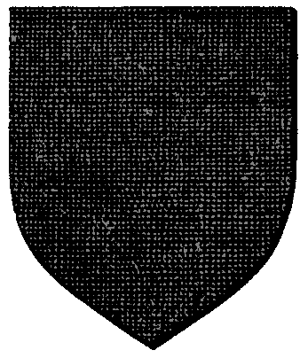

| Übersicht,
Newbies und Fragen |
|
Heilen im Kampf
|
Sethwyn Seitenhieb
 |
Ich bin seit eben stolze Begleiterin eines Zwergenheilers.
In der Kampfeinstellung hat er eine zusätzliche Funktion neben Nah- und Fernkampf mit "Heilen".
Macht der das dann automatisch? Wie genau darf ich mir das bitte vorstellen? |
02.09.10 14:57

 |
|
| Deirdre B. McMulenberc (RIP) |
ja, wenn du zB eine Kampfrunde macht, heilt der in dieser runde irgendeinen beliebigen Charakter... wobei die stärke der Heilung auch vom skill abhängt
und nein, die heilung ist wirklich random ;) es kann passieren, dass er x-mal den charakter heilt, der eh nicht getroffen wird und den mit 5 verbleibenden lp sterben lässt ^^ das ist wirklich zufall :) |
02.09.10 14:59
|
|
Sethwyn Seitenhieb
|
Verbraucht das dann zusätzliche Aktionspunkte? |
02.09.10 15:00
|
|
| Deirdre B. McMulenberc (RIP) |
nö ;) |
02.09.10 15:02
|
|
Sethwyn Seitenhieb
|
Danke dir! |
02.09.10 15:12
|
|
| Misaki von der Gaukelbeere (RIP) |
Heilung Schwache Heilung 10LP bis zu 3Chars Mittlere mehr aber nur 2Chars Starke kA
Aber sie heilen immer gleich viel bei gleicher stufe nur unterschiedlich viele Chars |
02.09.10 18:46
|
|
Klaus Störtebeker
 |
* Schwere Wunden: bis zu 1 zufälliger Charakter wird um 50 LP geheilt.
* Mittlere Wunden: bis zu 2 zufällige Charaktere werden um 20 LP geheilt.
* Leichte Wunden: bis zu 3 zufällig ausgewählte Charaktere werden um 10 LP geheilt
Das heißt, das es auch Runden geben kann, in denen niemand geheilt wird. |
02.09.10 20:31
|
|
| Misaki von der Gaukelbeere (RIP) |
(Massig am Anfang(wo niemand geheilt wird)) |
02.09.10 20:35
|
|
Übersicht,
Newbies und Fragen
|